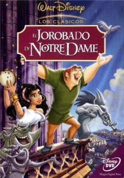

El Jorobado de Notre Dame (1996)
"En lo alto de la catedral de Notre Dame, oculto de las miradas de todos los ciudadanos de París, vive Quasimodo. Su tutor, el juez Frollo, no le permite que baje del campanario. Quasimodo pasa sus días acompañado de sus tres amigas gárgolas de piedra, Victor, Hugo y Laverne, observando el bullicio de las calles de París. Un día decide salir de la catedral a escondidas y conoce a la bella gitana Esmeralda, con la que vivirá su mayor aventura."
